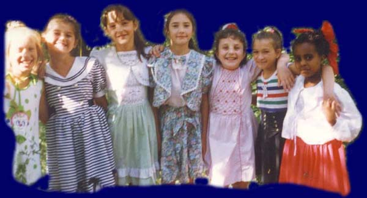
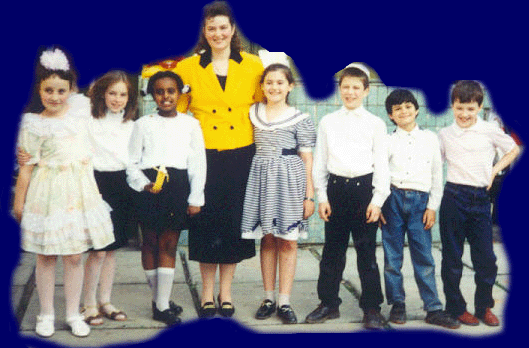
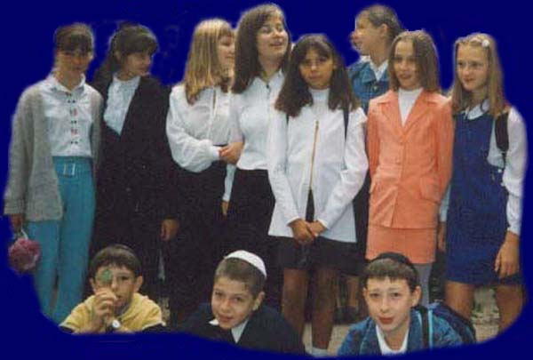
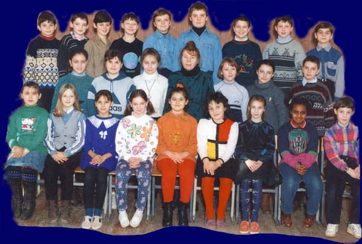

Home
My Hobbies
My Fav links
My Baby's pics
Sign
My Guestbook
Home
My Hobbies
My Fav links
My Baby's pics
Sign
My Guestbook
|  |
Here's my 8th birthday... |  |
Here is my class in 3rd grade... |
 |
My class in 7th grade |
 |
My class in 6th grade |